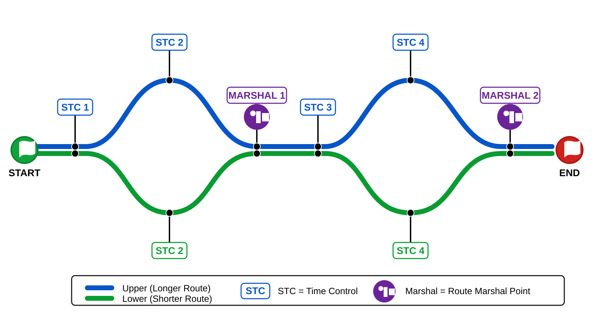

Time and Distance Rallies Overview
Introduction
Time and Distance Rallies is an integrated rally planning and results system. It supports rallies of up to seven days, four speed groups and, where required, two routes on a rally day.
The app brings the main rally tasks together in one project:
- set up the rally, days, routes and speed groups;
- invite and manage entries;
- map the route and position waypoints and controls;
- prepare schedules and calculate timings;
- collect STC and Marshal times;
- optionally track entrant progress on desktop or mobile and replay recorded event movement;
- review penalties and produce results.
Much of the repetitive work is automated using Google Forms and Google Sheets. The app creates the online forms used to collect entries, STC times and Marshal times, while Google Sheets stores and organises the submitted data ready for the app to review and download. Once this Google connection has been set up, the same arrangement can be used for future rallies without rebuilding the forms and data structure each time.
Before using the online entry and control features, complete the Google setup described in the Admin Guide. This is a one-time setup and should be completed carefully before the first rally is published.
Entrants and Marshals can submit information using links shared by email or WhatsApp. Returned data can then be reviewed and downloaded directly into the relevant rally pages, reducing the need for manual data entry.
The STC Recorder mobile app provides an additional way for entrants to record and submit Self Time Control times. Depending on the rally setup, it can operate as a button-based recorder or use GPS-supported timing. Detailed operating information is provided in the STC Recorder guide.
Tracking is an optional extension of the STC Recorder. When enabled in Controls, the entrant’s mobile app records periodic positions during the rally and forwards them to the event tracking system. Tracking can be viewed on the Rally Tracking page from a desktop computer or from a mobile device, giving organisers a live overview of entrant progress without changing the normal timing and results workflow.
The Rally Tracking page also includes Event Replay. Recorded positions can be replayed later to review the movement of one entrant or the event as a whole. Tracking is enabled, updated and shared through the Controls page; the separate Tracking guide explains the desktop and mobile viewing features, track history and Event Replay.
All pages work together as one rally project. Saving the project stores the current Admin, Mapping, Schedule and Controls data together.
Refer to the individual guide documents for detailed instructions for each page.
The basics
Select the Admin page
- First enter the title of your Rally, the entry pill in the centre of the button panel.
- Select the number of Rally Days, then set your rally dates, the start times for each day and the start increment.
- Select Speed Groups select the number of groups then set the maximum speeds for each group.
- Select Tools then select Set Rally Workspace, in the dialog presented, choose where you want your rally files to be saved, for example My Documents, add a new folder, name the folder Rally projects, whenever you select save your projects will be saved to this folder.
As each new project is saved a new sub folder is automatically created, as you save a project a new version of that project will be saved in that sub folder.
Save and load is common to all pages, when used the data of all the pages is saved, or replaced by a load.
Note: before uploading rally data ensure you have saved a copy of your rally project.
- Select Entries then select Setting up guide follow the instructions to set up your Google drive, this only has to be done once. After the setting up process Google form generation is fully automated based on the details of each rally. Entry and result data being collated ready for download and review.
- With your mobile number and the Google URL pasted into the admin card, select Save and test the indication at the top of the card will change to Connected confirming your setup is complete and ready for use.
- Select Upload entry data, then select one of the link options to share inviting entries.
- Your admin tasks are now complete, later once entries have been submitted select Download entry data, the entries table of the admin page will be automatically populated. Optionally you can enter data manually.
- Before the commencement of the rally, you will need to return to and the admin page, then select Sort, which arranges entries into speed group order.
Select the Schedule page
- The ADD ROW button is used to add additional rows to your schedule, when selected a menu is presented offering a selection of row types including STCs and Marshals.
- Distance and speed entry cells have an orange ring; the ring is cleared once a cell has a typed entry.
- If an entered distance is less than the row above, that cell will gain a red error ring, correct the error.
- Distance and time entries have a tick box option, when checked the font changes to red, that entry will not appear in print.
- If a speed in a row below is the same, it's automatically set to red, speeds are only printed on change.
- When more than one speed group has been setup for the rally, checking a speed group in the button panel will present a card for that group, set the speeds for each group row as required. If a time for a row has been set to red, the same rows of the speed group cards will be red.
- When an Added time row is included, the times that you add are per each speed group, in the instruction section of the row there is a drop-down menu to select a reason for the added time.
- As controls are included into the schedule, they are automatically added to the Controls page.
- The last column of the page is Turn, clicking a cell of the column will present a set of turn abbreviations, optionally the Turn column can be excluded from print by clicking Turn. The column text turning red.
- Selecting Timeline opens a card that enables you to step through your rally schedule and observe the interaction of the different speed groups. When you first use timeline you may not have all entry details, set Cars to represent the entries for each speed group. Delay, adding a delay introduces a time gap between the cars of different speed groups leaving the start, to include any delays the Include Start Delays needs to be checked in the admin page.
Select the Mapping page
- Plot the route in driving order and add waypoints, STCs, Start STCs, Marshals and Open Controls.
- Review cumulative route distances and edit waypoint notes and control details.
- Use map tools and Street View to check the position and suitability of each point.
- Import Rally Field Tool data to add accurate coordinates, control trip lines and field notes.
- Save separate Route 1 and Route 2 maps when two routes are enabled.
- Import the completed mapped route into Schedule when it is ready for timing and instruction work.
- Select Help on the Mapping page for the full workflow.
Select the Controls page
- The controls page is automatically populated with entrant details and control cards as they were added.
- If the page is to be used manually then only ATA times need to be entered, to aid manual entries selecting the entrant Rally No will present a card listing all the controls so ATA times can be recorded more efficiently.
- Should you wish to review ETA time based on start times the Starts button can be selected, which temporarily replaces total score with start timings.
- Optionally there is a Clerk of the Course card into which can be entered a reason for receiving additional penalties and the value to be awarded, by default COC penalty are not included in the final score until COC is checked.
- This App includes the use of optional Start STCs, refer to the Controls guide for further details.
- Prior to uploading controls data your entries should be sorted into speed groups, an admin page function.
- Select the Controls data, then select Upload control data button.
- When appropriate select a share link options which you then forward to entrants and Marshals gaining timing data. To gather STC results there are two options: via a Google form or via the mobile App. Either or both can be used. The last data submitted is used.
- The STC Recoder mobile App, which is Android and IOS compatible is opened via a shared link. To use the App the entrant enters his Rally number, Surname and rally start time. For each of the day's STC's there is a button to record the elapsed time, at the end of the rally the recorded data is uploaded by the entrant. The device used needs only to be on-line to recieve and share data from the App, during use a network connection is not required.
- You can review the data submitted before selecting Download control data, the ATA data fields will be populated and error scores calculated.
- There is the audit option, when selected score values higher than the audit value will be highlighted in Red, each control card can be unchecked excluding its error scores from the days total score, when printed that control will be shown as 0 errors.
- If uploaded control data become out of date the Controls data button will wink advising that your uploaded data is out of date.
- STC and Marshal response forms are automatically generated based on the number of controls and entrants.
- Printing of results, once you have checked and are satisfied that the results are ready for presentation the Print button is selected, select the desired option and print. The controls page can be exported in Excel format.
Rally Routes in a day
- A Rally schedule for a day can be setup to have more than one route, to enable this feature Routes in Admin is selected, when 2 Routes are selected, an additional column is added to the entries table enabling entrants to be allocated to either route option. The selected route remains assigned to that entrant no matter their Speed group allocation or if the entry table is sorted.
- Route option examples, alternate entries follow a different route (around the houses), or a Speed Group that follows a shorter route, but note, both routes must include the same number of controls.

- On the schedule page when the Routes option is set to 2 in Admin, there is an added Route selector in the tools panel of Schedule. Separate schedules need to be compiled for each route, each of the schedules must include the same number of controls such as STCs and Marshals.
- A facility is provided so that after compiling the schedule for Route 1 you can clone it to Route 2, then edit route 2 as required.
- Timeline when selected via schedule route 2 will be present the combination of both day routes.
- The controls page is fully automated and automatically assigns ATA times for each entrant based on the route assignment and speed group selected.
Note: Be advised that if two routes is selected each day will need to be setup accommodating two routes, even if on the later days the route is the same. You can also set routes back to one for days that only have a single route.
Guide documents
- Admin guide
- Setting up guide (Google - Admin Entries Card)
- Schedule guide
- Route mapping guide, selected via the Route Mapping page.
- Controls guide
- Tracking guide
The Dashboard
The Dashboard shares an overview of Rally data in three sections, Admin, Schedule and Controls. As well as buttons to select the pages and guide documents.
Admin
- Date and Time of last Upload and Download.
- Total Entries.
- Entries per Speed Group.
- An indication that 2 routes has been selected.
Schedule
- Day, Date and Start Time for each rally day.
- The total rally distance and expected time of the last entrant to finish.
- Per Speed Group, the driving time and overall time, the difference being any added times.
note: the timings shared are only for the first route.
Controls
- Date and Time of last Upload and Download.
- The number of STCs and Start STCs.
- For each Marshal, the expected times of entrants passing the control.
Google overview
The rally application automatically configures a Google drive with the assets required to manage rally projects. A master folder in your My Drive titled Time & Distance Rallies is created, for each new rally a new sub folder is added inside this main folder. To setup this facility the Entries button of the Admin page is selected, then review the setting up guide, button at the bottom of the card presented.
Google forms are what you share inviting entries and during the rally gaining result data for STCs and Marshal times. These forms are generated automatically based on the details of the specific rally.
As data is submitted it populates a Google response sheet, these sheets are surveyed and responses checked before being transferred to a Google project worksheet, this all happens automatically.
Entry form
The default title of the entry form is the same as the rally name first entered, but it can be edited in the Admin entries card as required, once you have performed an upload the link to the form can be selected and the form reviewed, if necessary, you can amend the form title text and then re-upload before distributing the link for entrants to complete.
Speed Group options included in the form are as setup on Admin page. After publication, the speed of a group might be amended during the subsequent rally design process, if a speed value of a group is changed, no matter what value was published on the form that entrant will still be assigned to the group selected. There is no need to republish the entry form.
An entrant can submit more than one response, should a later response be received that copied to the Google worksheet will be overwritten, the details qualifying an entry are drivers surname and email address. Recorded in the Google response will be all the entries but the worksheet will only have the last entry for that entrant, where this is useful, a change of navigator for example.
STC form
The STC form is automatically complements the STC controls included in the rally schedule. An entrant can return more than one response, the last being presented in the data worksheet. STC response are qualified based on drivers surname and rally number, any response that does not match this check criteria is copied to an STC Error sheet which can be reviewed via the Open controls data button provided on Controls data card.
Marshal forms
There is only one marshal form per rally day, each form list all the entrants as well as detailing each marshal by number/location.
Included on the form are the ETA times for the first and last car to pass each marshal location, these times do not include how long before or after the ETA times the marshal should be at the location, typically 10 minutes.
Populating the rally pages
In order to populates the pages of the program, Entries or Controls, the interface cards of that page are selected, Google worksheet data can be reviewed using the buttons of the card, then Download selected, pages are populated automatically.
Uploading and downloading is not an instantaneous process, so allow time for the program to do its job.
Rally Recorder Mobile App
STC times can be submitted using the rally Google form, so use of the Rally Recorder Mobile App is optional. The Recorder provides a more convenient in-car alternative, combining a rally timer, electronic STC recording, GPS audit and optional tracking.
Before the entrant's start time, the Recorder displays a countdown. At the start it automatically changes to elapsed rally time, complementing the crew's normal rally stopwatches. In Button mode, STC times are recorded directly on the mobile device by pressing the appropriate control button rather than writing each time down on paper.
The Recorder can be shared as a PWA from the daily rally link and used on both Android and iOS mobile devices. During the rally the PWA should remain open on the device. For event use, Flight/Airplane mode is recommended where practical to prevent incoming calls or other phone activity interrupting the app.
The Recorder can operate in two timing modes:
- Button mode — the entrant records each STC time by pressing the appropriate button. The recorded times are reviewed and submitted at the end of the event. At the same time, the app independently records GPS timing data. This GPS information does not replace the button time; it provides an audit against the manually recorded result.
- GPS mode — there are no entrant timing buttons. The app operates as a GPS logging device and automatically records control timing events. The recorded results are submitted at the end of the event.
The app can also record route tracking data. When the mobile device is online, track data can be shared with the rally tracking system and viewed from either the desktop Tracking page or the mobile tracking app. This is particularly useful when the Rally system is being used for touring or similar events where organisers want to monitor entrant progress.
For Android devices, the Recorder is also available as an installable app using the same daily links used to share the PWA. The installed version is not available on iOS because of platform restrictions.
After the event, recorded timing data is submitted to the rally system. Submissions are checked against the entrant's Rally number and surname, and a corrected submission can be made if required.
Route Mapping
Route Mapping is the route-planning and field-preparation part of the rally project. A complete route can be planned from the desktop, with waypoints, controls and route-shaping points placed in driving order and cumulative distances calculated automatically.
The route can be developed using the map tools together with Google mapping, Street View and known coordinates. It can then be checked and refined in the field using accurate GPS coordinates, control information and trip lines gathered with the Rally Field Tool.
Instruction details can be entered against mapped waypoints and controls during route planning and are imported into Schedule with the route. Once an instruction is edited in Schedule, the Schedule version becomes the working source for that instruction. Mapping remains the source for the physical waypoint or control position, route order and mapped distance structure.
Controls can include trip lines used for GPS-supported timing and validation. The saved route file can be shared to a mobile device and loaded into the Rally Field Tool, where waypoint positions, control lines and mapped cumulative distances can be checked against the route actually driven.
Mapped distances can also be compared with an independently measured distance, such as the Rally Field Tool GPS odometer or a calibrated fifth wheel. Distance CAL calculates the percentage difference and allows a separate positive or negative correction to be applied. The underlying OSRM/map distance is retained as the raw reference and remains available for checking and audit.
Route 1 and Route 2 are managed separately where two routes are enabled. Each route has its own working map and saved route files.
When the mapped route is ready, it is imported into Schedule. The mapped waypoints, controls, notes, instruction details and distances form the route structure, while Schedule manages rally timing detail, speeds, Added Time rows and subsequent editing of schedule instructions.
Changes to mapped waypoint or control positions are made in Mapping and the revised route is then re-imported into Schedule, keeping the physical route and Schedule aligned.
Select Help on the Mapping page for detailed instructions.